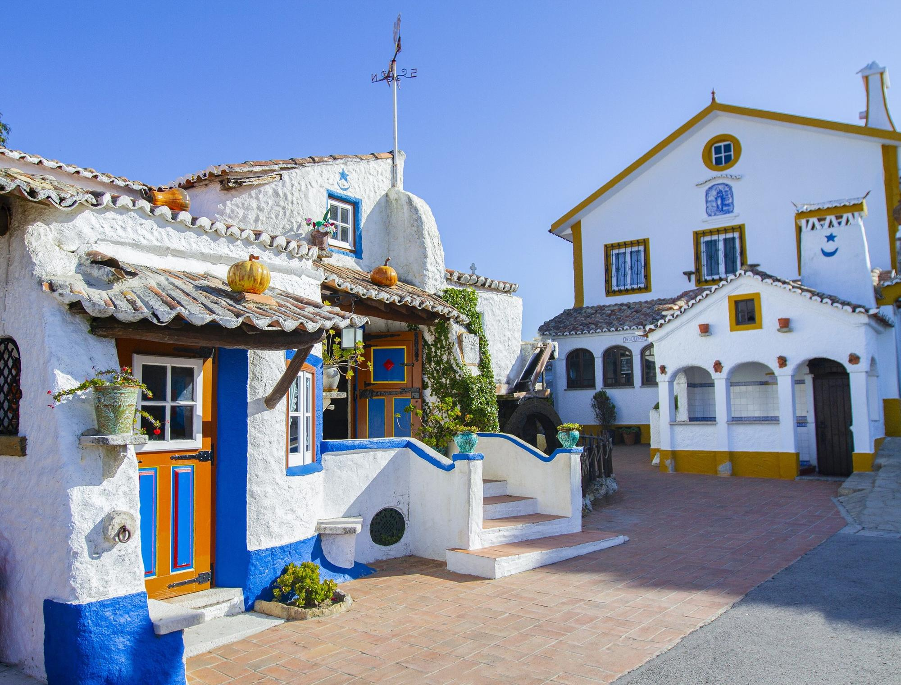
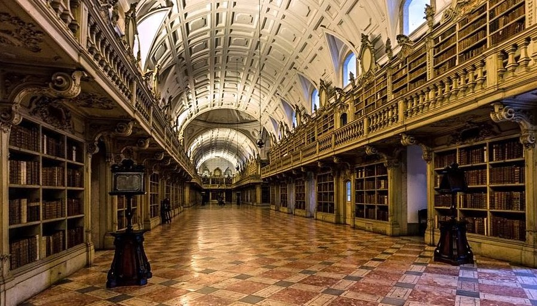
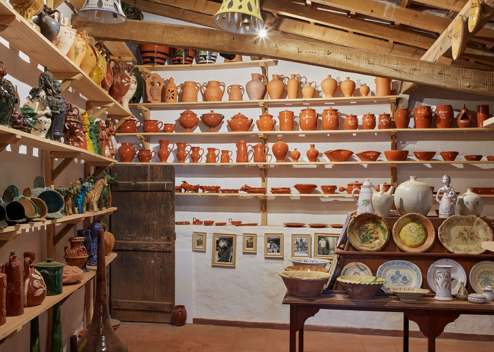

Multimédia
Fotografias



Vídeo
Poesia
Pedra de Silêncio
No alto ergue-se o convento, tão vasto, tão real,
Com sinos que ecoam num tom celestial,
Guardando memórias de um tempo imperial.
Entre bosques e ventos, a Tapada respira,
Mistério e vida selvagem em cada trilha que gira,
Onde o silêncio é rei e a natureza conspira.
Mafra é história gravada em mármore e chão,
É o fado que canta com nobre emoção,
Um lugar onde o tempo repousa em contemplação.
Pedra de Silêncio, por Copilot, escrito a 20/09/2025

"A poesia vive em cada detalhe"